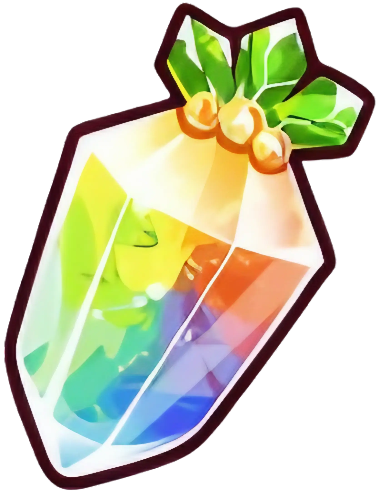
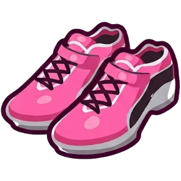
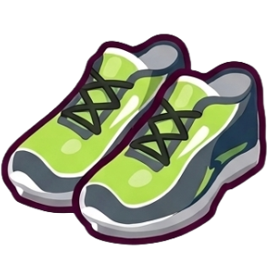
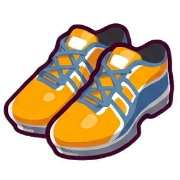
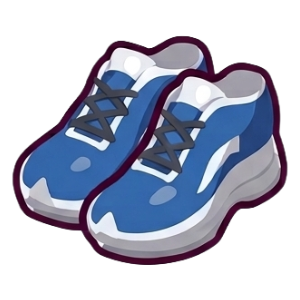
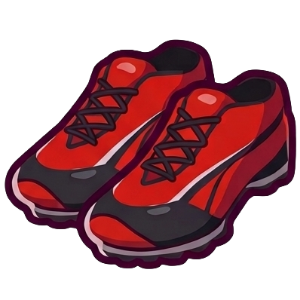

세계관
이 세계에는 말의 이름과 혼을 이어받은 소녀 종족 ‘우마무스메’가 존재한다. 머리에 말귀, 허리에 말꼬리를 가진 소녀들이 도쿄의 트레센 학원에 입학해 훈련하고, 실제 일본 경마 일정을 따르는 레이스에 출전한다.

Race
실제 경마장 코스를 재현한 잔디 위를 달린다. 실황 아나운서의 중계까지 경마 그 자체다.
Winning Live
레이스에서 이기면 3D 라이브 공연을 한다. 이 게임만의 독특한 승리 의식이다.
Real Horse Motif
전 캐릭터가 실존 경주마의 이름을 지녔다. 마주에게 정식 라이선스를 받았다.
Tracen Academy
우마무스메들의 훈련 기관. 플레이어는 이 학원의 ‘트레이너’가 되어 우마무스메를 키운다.
모티프
게임이 하나하나 알려준다. 오히려 모르는 상태에서 시작해야 “이게 실화였어?” 하는 충격이 배가 된다. 이 게임의 모든 캐릭터는 실존 경주마를 모티프로 삼고 있으며, 마주로부터 정식 라이선스를 받아 사용한다.
How Real Horses Become Characters
원본마의 모색은 머리카락 색이 되고, 마주의 기수복 배색은 레이싱 의상인 승부복에 반영된다. 성격과 목표, 좌절, 라이벌 관계까지 원본마의 실제 전적에서 가져온다. 골드 쉽의 게이트 거부, 오구리 캡의 왕성한 식욕, 하루 우라라의 113번 출전 0승 기록 등 원본마의 실제 기행이 캐릭터에 직접 녹아 있다.
Stallion vs Mare Design
숫말 모티프 캐릭터는 왼쪽 귀 장식 + 체육복 반바지를 착용하고, 암말 모티프 캐릭터는 오른쪽 귀 장식 + 체육복 블루머를 착용한다. 파인 모션의 경우, 원본마가 인터섹스로 알려져 의도적으로 양쪽 귀에 장식을 단 디자인이 적용되었다.
Based on True Stories
사일런스 스즈카의 원본마는 1998년 경주 중 골절로 세상을 떠났다. 게임에서는 그 비극을 IF 루트로 재구성했다. 실화를 알고 나면 감정의 무게가 완전히 달라지며, 이런 서사를 가진 캐릭터가 끊임없이 등장한다.
클래식 삼관(사츠키상 → 일본 더비 → 국화상)은 우마무스메가 평생 단 한 번만 도전할 수 있는 세 경주이며, 대부분의 시나리오가 이 삼관을 축으로 전개된다. 구체적인 G1 레이스 일람은 구조 탭에서 확인할 수 있다.
트리플 티아라(벚꽃상 → 오크스 → 추화상)는 원래 암말 전용이지만, 우마무스메 세계에서는 전원 여성이므로 숫말 모티프도 출전 가능하다. G1 9승의 아몬드 아이, 재팬컵 2연패의 젠틸돈나 등 암말 모티프 캐릭터가 잇달아 출시되며 티아라 노선도 확장되고 있다.
2025년 11월, 일본 경주마 포에버 영이 미국 브리더즈컵 클래식에서 우승했다. 일본 태생 경주마로서는 사상 최초다. 포에버 영의 마주인 후지타 스스무는 사이게임즈 모기업 사이버에이전트의 사장으로, 팬덤에서는 과금이 마주 활동에 기여했다며 ‘한 입 마주’를 자처하는 밈이 생기기도 했다.
포에버 영의 생일은 우마무스메 게임 서비스 개시일(2월 24일)과 같다. 2026년 2월, 게임 5주년 기념 방송에서 포에버 영의 우마무스메 캐릭터와 브리더즈컵 배경의 신규 시나리오 ‘Beyond Dreams’가 동시에 공개되었다. 현역 경주마가 우마무스메로 구현된 사례는 극히 드물며, 원본마의 실제 활약과 게임 콘텐츠가 실시간으로 연동되는 이 게임 특유의 현상이다.
특징
실존 경주마의 생애를 원작으로, 모든 캐릭터가 자신만의 드라마 속 주인공이 된다. 육성, 레이스, 라이브, 스토리가 하나로 맞물리는 구조가 이 게임의 핵심이다.
Voice & Live
전 에피소드 풀보이스 스토리, 실제 경마를 연상시키는 실황 중계, 승리 후 펼쳐지는 위닝 라이브 무대까지. 모든 보이스를 성우진이 직접 녹음했다. 원본마 서사와 연관된 특정 조건을 만족하면 송출되는 특수 실황 대사도 있어, 알수록 더 재미있다.
Simulation
한 명을 키우는 데 약 30~40분. 같은 캐릭터도 선택지, 컨디션, 이벤트 분기에 따라 결과가 전혀 다르다. 한 판 끝나면 자연스럽게 다음 판을 시작하게 된다.
Race
실제 경마장 코스, 코너 각도, 잔디 질감까지 재현했다. 아나운서의 실시간 중계가 경기 시작부터 끝까지 호흡을 따라가며, 마지막 직선의 데드히트 연출은 매번 손에 땀이 찬다. 비 오는 날에는 지면 상태가 바뀌어 레이스 전략까지 달라진다.
Based on True Stories
라이스 샤워의 원본마는 메지로 맥퀸의 3연패를 저지하며 우승했지만, 관중에게 ‘악역’이라는 야유를 받았다. 2년 뒤 같은 경기에서 재우승하며 명예를 되찾았으나 얼마 후 경주 중 골절로 세상을 떠났다. 전 캐릭터의 서사가 이런 실화를 바탕으로 한다.
게임 외에도 TV 애니메이션, 극장판, 웹 애니메이션, 만화 등 다양한 미디어로 이 세계에 들어올 수 있다. 어떤 미디어에서 시작하든 같은 트레센 학원 세계관을 공유하며, 각각 독립된 서사를 갖고 있어 순서에 상관없이 즐길 수 있다.
Season 1~3 + RTTT
시즌 2는 BD 1권 약 17만 장 판매로 에반게리온의 역대 기록을 경신했다. 웹 애니 ROAD TO THE TOP은 ‘프랜차이즈 피크’라는 평가를 받았다.
새로운 시대의 문
2024년 일본 개봉, 박스오피스 14억 엔. 정글 포켓과 아그네스 타키온의 라이벌 관계를 그렸으며, 레이스 작화와 연출력으로 호평을 받았다.
Cinderella Gray
영 점프 연재 만화, 전 22권 누적 800만 부 이상. 오구리 캡의 지방경마장에서 중앙경마 전설로의 여정을 그린다.
Real Horse Racing
원래 경마 팬이 우마무스메에 입덕하거나, 우마무스메를 통해 처음 경마장을 찾는 팬이 급증했다. 게임과 현실이 서로를 키우는 구조다.
우마무스메는 픽션이 현실에 영향을 준 드문 사례다. 게임 출시 후 일본 경마장의 20대 관객이 눈에 띄게 늘었고, 퇴역마 복지 단체의 기부금은 전년 대비 20배 이상 증가했다.
교토 경마장의 라이스 샤워 추모비에는 게임 출시 이후 꽃과 추모 물품이 과거 어느 때보다 많이 쌓이고 있으며, 하루 우라라에게는 팬들이 2,500kg 이상의 목초를 기부해 사이트가 다운되기도 했다.
TGA 2025 Best Mobile Game
2025년 글로벌 영어 버전 출시 후 6개월 만에 수상. 누적 매출 약 25억 달러(3.4조 원). Cygames는 브리더즈컵 공식 파트너, 산타 아니타 파크 메인 스폰서 등 세계 주요 경마 대회와 파트너십을 맺고 있다.
시스템
매 턴 훈련·휴식·외출·레이스 중 하나를 선택하며, 게임 내 시간 3년간 우마무스메를 성장시킨다. 육성이 끝나면 하나의 완성된 개체가 탄생하고, 더 나은 개체를 원한다면 처음부터 다시 키운다. 한 판이 곧 하나의 육성이다.
반 달 단위의 턴마다 스피드·스태미나·파워·근성·지능 중 하나를 훈련한다. 각 훈련은 주 능력치 외에 보조 능력치도 소폭 올려주며, 훈련을 반복할수록 트레이닝 레벨이 올라 효율이 높아진다. 훈련에는 실패 확률이 있으며, 실패 시 체력이 급감하고 상태 이상에 걸릴 수 있다.
2년차·3년차 여름에 진행되는 특별 기간. 모든 트레이닝 레벨이 +5 상승하고 훈련 효율이 극대화된다. 이 기간에는 레이스를 쉬고 훈련에만 집중하는 것이 정석이다.
이 게임의 스탯 성장을 좌우하는 가장 핵심적인 메커니즘이다. 육성 중 서포트카드 캐릭터와 함께 훈련하면 해당 카드의 인연 게이지가 쌓인다. 게이지가 80 이상(아이콘이 주황색으로 반짝반짝 빛남)이 되면, 그 카드가 배치된 훈련에서 우정 트레이닝이 발동한다. 우정 트레이닝이 발동하면 통상 훈련 대비 스탯 상승량이 2~3배로 뛰어오른다.
우정 트레이닝을 많이, 빠르게 발동시키는 것이 고스탯 육성의 핵심이다. 그래서 주니어 시기(1년차)에는 스탯 올리기보다 인연 게이지를 80까지 채우는 것을 우선해야 한다. 서포트카드 캐릭터가 많이 모여 있는 훈련을 골라서 함께 훈련하면 인연이 빠르게 쌓인다. 느낌표(힌트) 표시가 뜬 카드가 있는 훈련도 인연 보너스가 있으므로 우선 선택하면 좋다.
인연 게이지 80 이상 + 해당 카드가 훈련에 배치 + 카드의 득의 훈련과 실제 훈련이 일치 → 우정 트레이닝 발동. 여름 합숙 때 트레이닝 레벨 +5와 겹치면 스탯이 폭발적으로 상승한다.
실제 일본 경마장을 재현한 코스에서 최대 18명이 경주한다. 레이스 결과에 따라 팬 수, 스킬 포인트, 스탯 보너스를 획득하며, 캐릭터별로 지정된 목표 레이스(G1 등)에서 승리해야 육성이 계속 진행된다. 상위 입상 시 3D 위닝 라이브가 펼쳐진다.
레이스에는 두 가지 적성이 관여한다. 거리 적성은 단거리(~1400m)·마일(~1800m)·중거리(~2400m)·장거리(2401m~)로 나뉘며, 작전 적성은 도주·선행·선입·추입으로 나뉜다. 각 적성 등급에 따라 스피드와 지능에 보정이 걸리므로, 캐릭터에 맞는 거리와 작전을 선택하는 것이 중요하다.
레이스는 초반·중반·종반의 세 구간으로 진행되며, 구간별로 발동하는 스킬이 다르다. 종반 직선에서 얼마나 효과적으로 가속 스킬을 터뜨리느냐가 승부의 핵심이다. 마장 적성도 잔디와 더트로 나뉘어, 더트 전용 레이스 역시 존재한다.
천연 잔디가 깔린 코스. 일본 경마의 주류이며, 게임 내 대부분의 G1 레이스가 잔디에서 열린다. 비가 오면 지면이 무르게 변해 스태미나 소모가 커지고 가속이 어려워진다.
모래와 흙이 깔린 코스. 미국·한국 경마에서는 주류이지만, 일본에서는 비주류 취급이다. 잔디와 반대로, 비가 오면 지면이 단단해져 오히려 달리기 쉬워진다. 게임 내 더트 G1은 페브러리 S, 챔피언스컵, 도쿄 대상전, 전일본 주니어 우준 네 개다.
캐릭터·카드
우마무스메의 성장은 캐릭터의 적성, 서포트카드의 편성, 인자의 계승, 그리고 가챠에서 뽑는 자원으로 결정된다.
모든 우마무스메에게는 거리 적성(단거리·마일·중거리·장거리), 작전 적성(도주·선행·선입·추입), 마장 적성(잔디·더트)이 부여되어 있다. 적성 등급은 G~S로 나뉘며, 등급이 높을수록 레이스에서 스피드·지능에 유리한 보정을 받는다.
기본 적성이 A인 거리와 작전으로 레이스에 출전하는 것이 정석이다. 애정 캐릭터를 적성 외 거리나 작전으로 운용하고 싶다면, 인자 계승을 통해 적성을 S까지 끌어올려야 한다. S 적성은 인자 계승 이벤트에서 확률적으로 획득되며, 부모 개체의 적성 인자를 미리 준비하는 과정이 필수다.
캐릭터에는 각성 레벨(Lv.1~5)이 있으며, 각성 레벨을 올리면 초기 보유 스킬이 추가 해방된다. Lv.3과 Lv.5에서 각각 레어 스킬이 해방되며, 이 스킬은 육성 중 특정 조건을 충족하면 더 강력한 진화 스킬로 변환될 수 있다. 각성에는 머니와 전용 재화가 필요하다.
육성을 보조하는 카드다. 어떤 서포트카드를 편성하느냐에 따라 육성 결과가 완전히 달라진다. 캐릭터보다 서포트카드가 중요하다는 것이 이 게임의 대전제다. 5가지 타입이 있으며, 각각 대응하는 훈련의 효과를 강화한다.
등급은 R → SR → SSR 순으로 올라간다. 서포트카드의 레벨을 올리면 지원 효과가 개방되고, 같은 카드를 겹쳐 상한 해방(최대 4회)하면 레벨 상한이 5씩 올라간다. 완전 해방에는 동일 카드가 총 5장(원본 1장 + 돌파 4회분) 필요하다.
서포트카드 레벨을 올리면 트레이닝 효과 증가, 우정 보너스, 힌트 발생률 등 지원 효과 슬롯이 하나씩 해방된다. 레벨업에는 서포트 포인트(SP)와 머니가 필요하며, 데일리 레이스에서 매일 파밍할 수 있다. 상한 해방 없이도 레벨 30까지는 올릴 수 있지만, 풀돌 + 최대 레벨(Lv.50)에서 카드의 진가가 드러난다.
동일한 서포트카드를 여러 장 보유하고 있다면, 상한 해방 메뉴에서 직접 돌파해야 한다. 자동으로 되지 않으므로 반드시 확인할 것. 1회 해방마다 카드의 스펙이 비약적으로 상승하며, 최대 4회까지 가능하다. 4회 완료 시 풀돌(풀 해방)이라 부른다. SSR·SR 등급은 무지개/황금 해방 결정을 사용해 동일 카드 없이도 해방할 수 있다.


육성이 끝난 우마무스메는 ‘인자’를 남긴다. 다음 육성 때 부모 2명을 선택해 인자를 계승받으며, 부모의 능력치·적성·스킬을 일부 물려받는 구조다. 좋은 인자를 가진 우마무스메를 반복 육성하는 것을 ‘인자작’이라 부르며, 육성 효율의 뿌리에 해당한다.
인자에는 스탯 인자(능력치 상승), 적성 인자(거리·작전·마장 적성 상승), 스킬 인자(스킬 힌트 획득), 레이스 인자(특정 G1 우승 시 생성) 등이 있다. 인자의 별 수(⭐️1~⭐️3)는 확률적으로 결정되며, ⭐️3 적성 인자가 발동하면 한 단계 적성이 오른다. 이것이 적성 개조의 핵심 메커니즘이다.
마일 적성 A인 캐릭터를 중거리에서 운용하고 싶다면, 부모·조부모 개체에 중거리 ⭐️3 적성 인자를 확보하고, 계승 이벤트에서 중거리 적성이 A 이상으로 올라가길 반복 시도한다. S 적성 달성은 계승 이벤트에서의 확률 판정이므로, 수십 회 이상의 반복 육성이 필요할 수 있다.

캐릭터 가챠와 서포트카드 가챠, 두 종류가 있다. ⭐️3 및 SSR 배출률은 3%. 천장은 200연차, 쥬얼 30,000개이며, 이때 픽업 대상을 확정 교환할 수 있다. 교환 포인트는 배너 종료 시 소멸하므로, 쥬얼 30,000개 미확보 시 뽑지 않는 것이 철칙이다.
캐릭터는 교환권으로 얻을 수 있다. 서포트카드는 가챠 외에 방법이 없다. 따라서 서포트카드 가챠에 쥬얼을 우선 투자하는 것이 정석이다.
G1은 경마 레이스의 최상위 등급이다. 게임에 등장하는 모든 G1은 JRA가 실제로 운영하는 레이스와 이름·거리·경마장·개최 시기가 동일하며, 코스 형태와 고저차까지 재현되어 있다.
특정 G1 조합을 같은 해에 모두 우승하면 타이틀이 기록된다. 실제 경마에서 부여되는 타이틀을 기반으로 구성되어 있다.
시나리오
우마무스메의 ‘육성 시나리오’는 육성 방식을 결정하는 모드다. 시나리오마다 고유한 시스템과 규칙이 있으며, 최신 시나리오일수록 육성 고점이 높다. 현재까지 총 13개가 출시되었다.
한섭 최신 시나리오
2026.2.17 업데이트 · 중장거리 특화
천재 박사 슈가 라이츠가 개발한 로봇 ‘메카 우마무스메 ST-2(새티)’를 튜닝하며 육성하는 시나리오다. 메카 에너지를 칩에 할당해 성능을 강화하고, 오버드라이브를 발동해 훈련 효과를 폭발적으로 높이는 것이 핵심이다.
직전 시나리오(대풍식제)의 느린 진행 속도를 개선해, L’Arc 다음으로 빠른 육성 시간을 자랑한다. 시나리오 링크 0순위는 SSR 에어 샤커(스태미나)로, ‘연구 Lv에 따른 트레이닝 효과 상승’ + ‘메카 에너지 초기 획득량 +1’ 두 가지 핵심 효과를 모두 보유하고 있어 필수 편성이다.
일섭 최신 시나리오
2026.2.24 · 5주년 시나리오 · 전 거리 · 잔디+더트 대응
미국 브리더즈컵(Breeders’ Cup) 제패를 목표로 원정 팀 ‘DREAMS’를 결성하는 시나리오다. 단거리·마일·중거리, 잔디·더트에서 자유롭게 목표 레이스를 선택할 수 있어 역대 가장 높은 범용성을 지닌다.
핵심 캐릭터는 카지노 드라이브(친구 서포트). 팀 랭크를 올려 DREAMS 트레이닝을 발동하면 최대 8인 합동 훈련이 가능하며, 스피드 스탯이 상한 2,100까지 돌파할 수 있다. 시나리오 링크: 러브즈 온리 유, 마르슈 로렌, 레드 디자이어, 에스푸아르 시티, 포에버 영.
준비하기
게임에 들어가기 전, 설치와 초기 세팅을 마치는 단계다.
앱스토어·구글 플레이 ‘우마무스메’ 검색. 카카오 로그인.
앱스토어·구글 플레이·Steam·DMM. VPN 필수. 한글패치 가능.
전체 데이터 약 20GB 이상. Wi-Fi 환경에서 설치할 것.
이 게임에서 육성의 질을 결정하는 건 캐릭터의 레어도가 아니라 서포트카드의 돌파 수다. 캐릭터는 명함(1장)만 있으면 충분하지만, 서포트카드는 풀돌(4돌파)이 되어야 제 성능이 나온다. 리세마라는 서포트카드 가챠에 전액 투입하는 것이 정석이다.
튜토리얼 완료 → 선물함 보상 수령 → 서포트카드 가챠 40연차. 불만족 시 카카오톡 설정에서 연결 서비스 삭제 후 재접속(2회차부터 약 1분). 시간이 부담된다면 타오바오 등 거래 사이트에서 리세계를 구입하는 방법도 있다. 매물은 GachaPlus에서 볼 수 있다.
튜토리얼(약 5분)을 끝내면 홈 화면에 진입한다. 아래 네 가지를 먼저 처리하면 초반 쥬얼 확보가 매끄럽다.
뉴비·접속 보상으로 수십 연차 분량의 쥬얼을 즉시 확보할 수 있다. 반드시 첫 번째로 확인.
메뉴 → 도감에 한 번 들어가기만 하면 쥬얼이 추가 지급된다. NEW 표시가 뜰 때마다 방문하면 50개씩 누적되는 숨은 광산.
메인 스토리·캐릭터 스토리를 시청(스킵 가능)할 때마다 쥬얼이 지급된다.
좋아하는 캐릭터를 선택. 성능 기준으로는 오구리 캡이 범용성이 높다.
시작하기
설치와 리세마라를 끝냈다면, 이제 실제 육성에 돌입한다. 이 게임의 핵심은 육성 → 팀 레이스 배치의 순환이다.
육성에 들어가기 전에 반드시 해야 할 일이 있다. 동일 서포트카드를 여러 장 보유하고 있다면 상한 해방 메뉴에서 직접 돌파해야 한다. 자동으로 되지 않으므로 빠뜨리기 쉽다. 돌파 후에는 레벨도 최대한 올려야 한다. 서포트카드 레벨이 낮으면 트레이닝 보너스가 약해서 육성 결과가 크게 떨어진다.
SSR보다 SR이라도 돌파 수가 높은 카드가 더 강하다. 0돌 SSR < 풀돌 SR인 경우가 대부분이므로, 돌파 수 기준으로 먼저 레벨을 올릴 것.
서포트카드 준비가 끝났다면, 홈 화면 우측 하단의 육성 버튼을 누른다. 아래 순서대로 화면이 진행되며, 각 단계에서 추천 선택지를 함께 표기했다.
처음이라면 URA 파이널스를 추천한다. 시스템이 가장 단순하다. 익숙해지면 메카 우마무스메(최신 시나리오)로 전환하면 육성 고점이 훨씬 높아진다.
첫 육성은 사쿠라 바쿠신 오(단거리 도주)를 추천. 스피드만 올리면 대부분 레이스에서 승리하므로, 게임의 기본 흐름(훈련 → 레이스 → 이벤트 선택지)을 익히기에 적합하다.
자기 개체 1명 + 렌탈(친구 개체) 1명. 처음에는 아무나 골라도 된다. 나중에 인자를 이해하면 전략적으로 선택하게 된다.
본인 소유 5장 + 친구에게 렌탈 1장 = 총 6장. 풀돌 친구 카드 1장이 핵심 전력이다. SSR 0~1돌보다 SR 풀돌이 대부분 더 강하므로, 레어도보다 돌파 수를 기준으로 선택. 인벤 카드 비교에서 카드 간 우열을 숫자로 판단할 수 있다.
주니어(1년) → 클래식(2년) → 시니어(3년), 총 72턴 동안 매턴 훈련·레이스·휴식·외출 중 하나를 선택한다. 육성이 끝나면 인자를 획득하고, 완성된 개체를 팀 레이스에 배치할 수 있다.
육성을 완료하지 않은 채 팀 레이스에 출전하는 것은 불가능하다.
단거리·마일은 스피드 2 + 파워 1 + 근성 1 + 지능 1(대풍식제 추천), 중거리·장거리는 스피드 2 + 스태미나 1 + 파워 1 + 지능 1(메카 우마무스메 추천)이 기본 틀이다. 나머지 1장은 캐릭터의 성장 포인트가 낮은 영역을 보강하는 카드로 채우면 균형이 맞는다.
육성 중 스탯을 크게 올리려면 우정 트레이닝을 빠르게 발동시키는 것이 핵심이다. 개념과 발동 조건은 시스템 → 우정 트레이닝이란?에서 확인할 수 있다.
팀 레이스는 단거리·마일·중거리·장거리·더트 5개 코스별로 3명씩, 총 15명의 육성 완료 개체를 편성해야 한다. 뉴비의 1차 목표는 15자리를 전부 채우는 것이다. 빈자리가 있으면 해당 코스에서 자동 패배하므로, 완성도보다 자리 수를 먼저 확보할 것. 팀 랭크가 올라갈수록 주간 보상(쥬얼·코인)이 늘어나며, E 달성 시 데일리 레이스가, E2 달성 시 챔피언스 미팅과 리그 오브 히어로스가 해방된다.
코스당 3명의 작전(도주·선행·선입·추입)이 겹치지 않아야 나이스 포지션 보너스(최대 6,000pt)를 받을 수 있다. 보유 캐릭터의 적성을 확인하고, 코스별로 작전이 겹치지 않게 배분하는 것이 핵심이다.

단거리 추천 캐릭터
마일 추천 캐릭터
중거리 추천 캐릭터
장거리 추천 캐릭터
더트 추천 캐릭터위 목록은 참고용이다. 보유하고 있는 우마무스메의 적성에 따라 자유롭게 배치하면 된다.
서클(길드)은 팀 랭크 E3 달성 시 가입할 수 있다. 매달 쥬얼과 서클 포인트가 지급되며, 서클 상점에서 SSR 서포트카드를 교환·돌파할 수 있다. 가입 후 14일이 지나야 해당 월 보상을 수령하므로 빨리 가입하는 것이 정답이다.
시간이 없어도 아래 다섯 가지는 매일 소화하는 것이 좋다. 전부 해도 10~15분이면 끝난다.
홈 → 레이스 → 데일리 레이스. 머니·강화 포인트·캐릭터 피스 등 핵심 재화를 획득한다. 하루 3회 제한이며, 미소화분은 소멸.
홈 → 레이스 → 팀 경기장. RP(레이스 포인트)가 2시간마다 1씩 충전되며, 최대 5까지 쌓인다. 순위에 따라 쥬얼과 코인이 지급되므로 RP가 넘치지 않게 매일 소진.
상시 운영되는 데일리 레전드 레이스(하루 1회)와, 특정 기간에만 열리는 이벤트 레전드 레이스(하루 3회)가 있다. 둘 다 보상이 넉넉하므로 매일 횟수를 채우는 것이 좋다.
서클 화면에서 서클원에게 아이템(신발 등)을 요청하고, 다른 서클원의 요청도 수락. 서클 포인트 누적에 기여하며, 매달 SSR 서포트 교환의 기반이 된다.
여유가 있을 때 하루 1회 육성을 돌리면 이벤트 Pt, 인자, 팀 레이스용 개체가 쌓인다. 번 머니는 서포트카드 레벨업에 최우선 투자.
인자(因子)는 육성 완료 시 랜덤 생성되는 유전 요소로, 다음 육성에서 부모말을 통해 자식에게 계승된다. 인자 하나로 스탯이 100~200 이상 차이날 수 있지만, 인자 농사는 서포트카드 풀이 갖춰진 뒤에 시작해도 늦지 않다. 초기에는 인벤 친구찾기에서 좋은 인자를 가진 유저를 빌려 쓰는 것이 효율적이다.
Character Gacha
캐릭터는 명함 1장이면 충분하다. 1성도 여신상으로 3성 각성하면 고유 스킬이 강화되어 실전 투입 가능. 쥬얼은 서포트카드 가챠에만 쓸 것. 그래도 애정캐를 뽑겠다면 말리진 않겠다.
SSR ≠ Best
SSR 0~1돌보다 SR 풀돌이 대부분 강하다. 인벤 카드 비교에서 트레이닝 상승치를 확인하는 습관을 들이면 실수를 피할 수 있다.
Join a Circle ASAP
미가입 상태는 매달 쥬얼, 서클 포인트, SSR 교환 기회를 모두 날리는 것과 같다. E3 달성 즉시 가입.
Secret Shop Trap
3성 우마무스메 조각을 비밀상점에서 사는 건 자산 탈탈. 쥬얼과 머니 모두 다른 곳에 쓰는 편이 훨씬 효율적이다.
공략
PvP 최상위는 핵과금 유저들의 영역이지만, 스토리·육성·위닝 라이브·이벤트 등 게임의 핵심 재미 요소는 무과금으로도 충분히 누릴 수 있다.
한섭은 일섭보다 약 1년 반 뒤에 콘텐츠가 업데이트된다. 이 시차를 이용하면 앞으로 출시될 캐릭터·서포트카드·PvP 일정을 미리 파악할 수 있고, 일섭에서 평가가 좋은 카드에 쥬얼을 비축하고 별로인 카드는 패스하는 전략이 가능하다. 아래 가이드에서 현재 미래시 일정을 확인할 수 있다.
게임에서 제공하는 서포트카드 5장 세트를 통째로 빌려서 육성할 수 있다. 자체 카드가 부족한 뉴비도 SSR 저돌파 이상의 성능으로 바로 육성을 시작할 수 있으며, 개별 카드를 구매해 풀돌파로 강화하는 것도 가능하다.